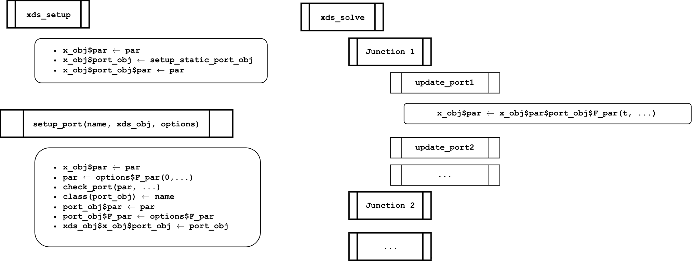

Forcing: Ports & Junctions
Exogenous Forcing: A Changing Baseline Modified by Control
Source:vignettes/Forcing.Rmd
Forcing.Rmdramp.xds is designed for model building
with progressive elaboration. To enable progressive
elaboration, model object must include structures that can handle
advanced set up options and functions to run the algorithms.
Most of these features will not be used most of the time, so they must
be designed in and present for the software to work at all. In most
cases, the features are turned off. This was handled by adding
ports and junctions.
Ports
A port in
ramp.xds or one of the satellite packages
is an object that handles a term or parameter, such as temperature,
other blood hosts, or search weights. Each port is defined
by:
the port object
the value for the port and a function that returns it
advanced setup functions
an updating function
There are four classes of ports in SimBA.
-
Structural ports handle terms on an interface:
parameters or variables affecting the search for blood, blood feeding, transmission or exposure;
parameters or variables affecting the search for aquatic habitats and egg laying, and emergence;
Mosquito bionomics ports are designed to model malaria transmission by mosquitoes as a baseline that has been modified by control; these ports are handled by an MY module or an L module.
Epidemiology ports handle mass treatment; these ports are handled by an XH module
All other po

xds_setup on the relevant object with parameter values set
to have no effect; an advanced setup function setup_port
that replaces the old default parameter, evaluates the port function and
checks the returned value, and then rebuilds and replaces the port
object; and a function update_port, called by a
Junction, that evalutes the function and stores the updated
value.Junctions
A junction in
ramp.xds is a function that implements
several ports. The Junctions are called in
xds_compute_terms, sandwiched between
Interface Functions that set the values of
terms that computed internally to handle transmission and exposure, or
egg laying and emergence.
The order is designed to handle dependencies and minimize conflicts.
-
Forcing is a junction that handles weather, hydrology, shocks and development.
-
Weather \(\in\)
ramp.forcingtemperaturerainfallhumidity
-
Hydrology \(\in\)
ramp.forcingmay depend onrainfallandtemperaturewater_levelwater_temperature
-
Shock \(\in\)
ramp.forcingquarantineconflict
-
Development \(\in\)
ramp.forcinggdphousing
-
-
Health implements variables associated with health systems, which may depend on
quarantineorconflictnutritionawarenessother_disease
Vector Control, part 1 (\(\in\)
ramp.forcing) sets up variables associated with vector control, which may depend on weather variables.-
Resources (\(\in\)
ramp.forcing) handles ports associated with mosquito ecology that are not already part of one of the interfaces, which may depend on weather variables.Availability of Sugar
Availability of Sugar Traps
-
Importation sets up the ports associated with malaria importation, which may depend on
conflictorquarantinetime_away(\(\in\)XH_obj)travel_eir(\(\in\)XH_obj)visitors(\(\in\)patches)vis_kappa(\(\in\)patches)
-
Blood Feeding handles all the ports that are part of the XY interface.
blood_search_weights(\(\in\)XH_obj)time_spent(\(\in\)XH_obj)other_blood_hosts(\(\in\)patches)blood_traps(\(\in\)patches)-
Compute Availability:
available_hosts— \(W\)available_blood_hosts— \(B\)
-
Aquatic Habitats handles all the ports that are part of the MY interface.
habitat_search_weights(\(\in\)L_obj)bad_habitats(\(\in\)patches)ovitraps(\(\in\)patches)-
Compute Availability:
available_habitats— \(Q\)available_water— \(W\)
-
Mosquito Bionomics, part 1: a baseline — handles mosquito bionomics ports. Part 1 sets the value of a baseline as well as models for vector control that integrate the effects through resource availability.
MBionomicssets the value for adult mosquitoes (\(\in\)MY_obj)LBionomicssets the value for immature mosquitoes (\(\in\)L_obj)
Vector Control, part 2 computes coverage and effect sizes of vector control, given the baseline.
-
Mosquito Bionomics, part 2: modified by control — handles effect sizes for mosquito bionomics ports
MEffectSizesapplies effect sizes to bionomic parameters for adult mosquitoes (\(\in\)MY_obj)LEffectSizesapplies effect sizes to bionomic parameters for immature mosquitoes (\(\in\)L_obj)
-
ML Interface
Emergence
EggLaying
Transmission
Exposure